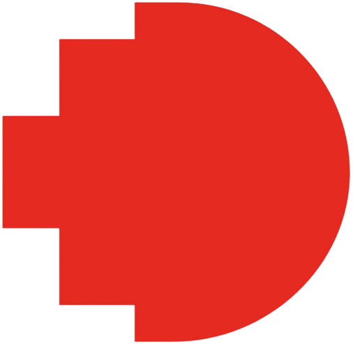

Biodiversity Monitoring Dashboard
Abstract:
The Biodiversity Monitoring Dashboard is a portable, local-first application that helps researchers analyze biodiversity survey data efficiently. Upload detection results from Perch and BirdNET, explore trends, and view summaries. All without requiring an internet connection after installation.
Technology Stack & Compatibility
- Stack: Grafana (visualization), Node-RED (data upload & processing), TimescaleDB/PostgreSQL (data storage), Docker Desktop (environment management)
- Supported OS: Windows 10/11, MacOS (Intel or Apple Silicon), Linux (with Docker Desktop)
- Requirements: Docker Desktop must be installed. No internet connection needed after initial download.
Setup & Usage Instructions
- Unzip the downloaded folder to any location (e.g., Desktop).
- Install Docker Desktop if not already installed:
https://www.docker.com/products/docker-desktop/
- Double-click Windows.bat (for Windows) or MacOS.command (for Mac). For Linux, run the Linux.sh shell script in Terminal.
- The dashboard should open in your browser with two key components:
• Node-RED UI for uploading or flushing data
• Grafana for exploring results and trends
- Grafana login: admin / 0m{-}>7nP8)C
- To stop: simply close your browser window.
Note:
Windows or Mac may show a security prompt the first time you run the script.
• Windows: Click “Run anyway” if prompted.
• Mac: Allow the script through “Security & Privacy” settings.
• Linux: Ensure the script has execution permissions (e.g., chmod +x Linux.sh).
Download Biodiversity Dashboard (.zip)
CSV File Format
The system expects CSV input files with the following columns:
Start (s), End (s), Scientific name, Common name, Confidence, File
# Start (s) – number: segment start time
# End (s) – number: segment end time
# Scientific name – string
# Common name – string
# Confidence – float (0.0 - 1.0)
# File – string (file name or full path)
Please ensure the file includes a header row and is properly comma-separated.
Troubleshooting & FAQ
Q: Docker Desktop won't start?
A: Make sure virtualization is enabled in your BIOS (for Windows) or check Docker support documentation for your OS.